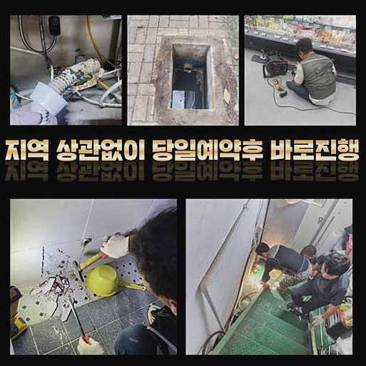
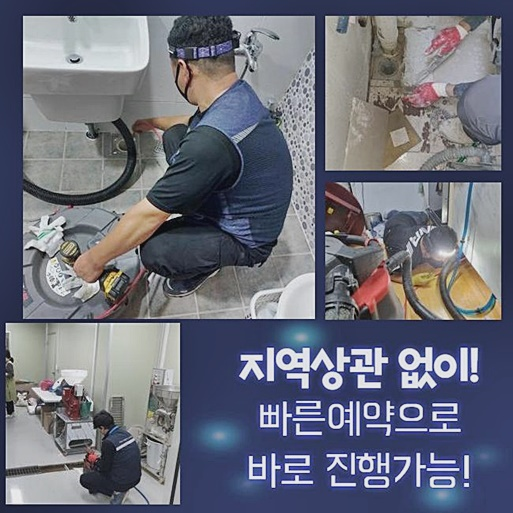
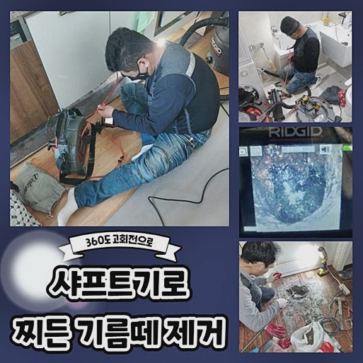
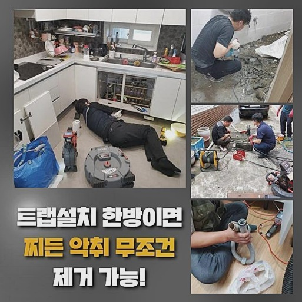
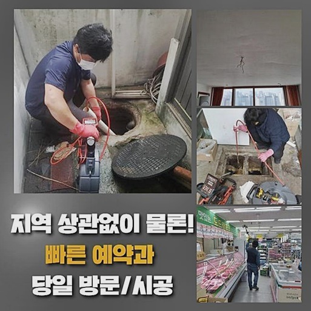
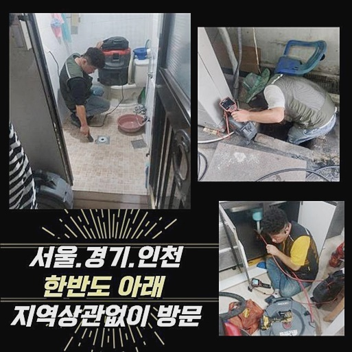

🏠 노원구 월계동화장실하수구뚫음 중계동 냄새차단 물샘전문업체
용인 하수구막힘 전문 시공 후기

📋 작업 개요
- 위치: 용인
- 서비스 유형: 하수구막힘, 배관막힘, 누수수리, 역류해결, 뚫는업체, 배관청소, 고압세척, 설비공사, 악취차단
- 작업 일시: 2024. 9. 19. 20:28
- 업체명: 하수구수사대 (010-5615-2118)
🔍 문제 상황
노원구 월계동화장실하수구뚫음 중계동 냄새차단 물샘전문업체
최근에 구축아파트에 사시는 고객님이 배관막힘에 연유한 역류증세로 문의하셨는데요
90년도에 지어진 단지였고 뜻하지않게 고장이 터져버려서 황급히 와달라고 하셨어요
물넘침 증세까지 보였다는 것은 이물질 적체가 배관에 무리를 줄 수 있는 단계까지 진행되었단걸 뜻하죠
저흰 출장을 전후하여 다양한 변수들을 고려하고 있습니다
구형 주택구조물은 보통 관로의 재료나 시스템이 역류나 막힘 등에 약한 모습을 보이고 때때로 건축물 중앙부분에 모여있기도 해요
이와같은 개별적 모양새를 파악하면 저희팀이 세팅해야되는 공구들 또한 변동되기도 하죠
그렇기에 세척업무를 시행하기 전엔 필수로 시스템적인 측면을 마스터해야 한답니다
고압세척기는 상당한 수준의 힘을 일으킬수가 있으므로 배수관의 지탱력이 충분하지 않다면 일부 파손이 될수도 있습니다
따라서 물세척이 필요하다면 구간별로 합당한 압력수준을 부여하는 세세한 과정이 요구돼요
물세척에 의한 관로 파괴는 누수나 배관교체 등 정황을 만들어내기 쉬워서 숙련된 전문인의 손길을 받아보시는 편이 마땅합니다
최첨단 기계들이나 숙련도가 모자란 의뢰인께서 해당문제를 처리하기는 상당히 어렵죠
마냥 돈사용을 아끼다가 관로에 금이라도 간다면 대략적인 시설물을 손봐야되는 모습이 나올수도 있겠죠

🔎 원인 분석
💡 전문가 진단: 정밀 진단 장비를 사용하여 슬러지의 고착 여부를 판명하고 타격/세척 작업을 실시했습니다.
그러므로 간소한 대응정도만 한다음 처치가 곤란하시다면 저희와 같은 곳을 찾으시는게 지출액을 낮출수 있는 방안이라고 말씀드려요
최근 내방한 장소는 30년 가까이된 아파트라서 파이프 클리닝에 오점이 상당수 발견되었어요
장애를 방치하게 된다면 이물질이 부패하거나 구린내가 진동하는 등의 수많은 불이익이 일어날수 있어 신속한 행동이 필수였습니다
고속 물세정은 관로 틈새까지 깔끔하게 노폐물들을 정리해내는 특징을 가집니다
일부분은 고착물의 분쇄 공구를 통해 강력하게 접착된 물질을 떼어낸 다음에 고압 물세척 과정을 시행할때도 있어요
장기간 적체된 석회물질들은 고수압 클리닝으로도 깔끔하게 없어지지 않을수 있는데 샤프트파쇄공구를 알맞게 적용하면 사태가 쉬이 정리되기도 해요
이런 과정들을 토대로 배관안의 물길을 속시원히 만들어내고 말썽을 막아낼수가 있죠
이같은 조치는 건축물의 수명을 유지하는데 굉장히 긴요한 몫을 맡으며 정례적으로 실시하는게 바람직합니다
본현장은 유지관리의 결핍에 의해서 나빠진 형편이라서 이후에 나타나기 쉬운 관로 차단증세를 방지하기 위해서 주기적인 관리방안과 간단한 세척과 같은 것들을 알려드리게 되었죠
관로 정체와 관련된 사태들은 기본적인 삶을 곤란하게 몰아갈수 있으며 좀더 진행되면 이물 역류의 현상으로 인하여 위생상의 파급력이 나타날수 있죠
그것들은 사실상 개인일상의 편익을 하락시키죠
그렇기에 배수관문제가 나타나게되면 정확하고 숙련성있는 손길이 요구돼요
잔재들은 파이프의 중앙부위에 누적되었거나 벽쪽에 붙어 잔존하기도 하죠

🔧 작업 과정
화장실은 각종 일회용도구들과 물휴지가 많고 개수대는 음식쓰레기가 많은 부분을 차지하죠
통상적으로 고속 물세정 과정은 대단히 도움을 많이 줍니다
고속 물세정은 공용 하수관이나 야외에 위치한 오물탱크쪽에서 고압의 물분사를 활용하여 관로내부를 소제하는 과정이랍니다
잔재들이 누증된 파이프를 정결하게 만들기 위해선 고속 물세정은 필수라고 볼수 있어요
우리와 같은 전문가들을 만나시면 세정업무를 더욱 능률적으로 시행할수가 있는겁니다
해당 경험이 적은 기술자가 내방하면 점검시 사태를 똑바로 헤아리기 힘들수있고 작업 마무리가 완결성이 낮아지기도 합니다
우리들은 이러한 경력이 많아서 사태를 정밀하게 관측하고 올바른 행동을 시행합니다
공사를 실시하던 중간에 긴 기간 정비를 하지 않아 고객 세대뿐이 아닌 공동파이프 및 아랫집의 배수공간까지 손실이 전파되어 있었답니다
대체적인 점검업무가 불가피한 사태가었습니다
만약에 시공이 더더욱 늦추어진다면 피해복구와 분쟁과 같은 다양한 문제들도 직면하실수 있다는 걸 고지해드려요
파이프관에 고착화된 침전물에서 시작한 고장으로 추정되었고 내시경기기를 활용하여 전체적인 조사를 해나갔습니다
내시경기계는 관의 곳곳을 정밀하게 검사하고 어떠한 방책을 적용할지 결단을 도와주는데요
내시경이 없다면 작업인력의 감에만 치중하여 진행되어 완결성이 떨어지기 쉬운겁니다
화면으로 이물들이 어느부분에 뭉쳐있는지 시스템은 어떠한지에 대해서 알아내어야 합당한 시공이라 불릴수 있죠
내시경기기를 통해 들여다보니 중앙 관로에 여러형태의 찌꺼기들이 돌덩어리와 같이 고정돼 있다는걸 파악하게 되었습니다
벽면에 부착된 석회성분은 단순히 물세척만으론 처치하기 어려우며 샤프트기계라는 전문 장비가 필수입니다
우선 관로를 확인하였고 노폐물이 집중된 곳을 찾고나서 파쇄장비를 동원해 뚫음을 실행했어요
이때 관로안에 파편화된 슬러지들을 처치하고 관로를 청소하는 작업이 시행되었는데 공정중에 흡입기기를 가동시켜서 관이 막힘없이 물흐름을 만들도록 하였어요
배관막힘은 쉽게 사라지지 않고 누수나 역류까지 일으킬수 있으므로 신속한 대처가 요구돼요
본 현장의 경우엔 건물의 여러집에서 연쇄적으로 일어났기에 손해량이 증가할수 있었기에 신경이 많이 쓰였는데요


✅ 작업 완료
그렇기 때문에 시기에 얽매이지 말고 곧바로 대처를 하시는게 마땅해요
우리팀은 주말이나 오전 9시 이전이라도 의뢰자께서 찾아주신다면 즉각적으로 출동할 준비자세가 돼있는 상태예요
형국이 급박하시다면 언제라도 우리팀으로 연락 부탁드려요
해당 처소에선 고약한 내가 풍기는 정황을 확인하였으며 배수 흐름과 역류상황에 대한 분석까지 샅샅이 검사하였는데요
만약에 수선에 실패하게 된다면 공임을 청하는 일이 없으며 손님의 불찰이 없는 선에서 나타난 고장은 비용없이 추후 수선을 받아보실수도 있어요
신뢰감 넘치는 작업을 통해서 고객께 깔끔한 마무리를 보여드릴게요




⚠️ 베란다 누수 및 방수 관리 방법
- ✅ 비가 많이 올 때 창틀 주변이나 아래층 천장에 얼룩이 생기는지 정기적으로 확인해 보세요.
- ✅ 우수관 주변 실리콘 마감이 들뜨거나 깨진 틈새가 있는지 손상 여부를 수시로 체크하세요.
- ✅ 베란다 바닥 타일의 줄눈(메지)이 소실되면 그 틈으로 물이 침투하여 누수가 유발됩니다.
- ✅ 누수 의심 증상 발견 시 방치하면 아래층 손실이 커지므로 즉시 전문가의 진단을 받으십시오.
💡 핵심 정리
- 확실한 장비 작업(내시경 점검 및 샤프트 스케일링)으로 원인을 뿌리 뽑습니다.
- 작업 후 1년 이내에 동일한 부위 재발 시 100% 무상 A/S 서비스를 보장합니다.
- 서울 · 경기 · 인천 전 지역에 24시간 언제든 긴급 출동할 수 있도록 항시 대기 중입니다.
❓ 자주 묻는 질문 (FAQ)
🚨 용인 하수구막힘 문제로 고민이신가요?
정확한 원인 진단과 확실한 시공으로 재발 없는 해결을 약속드립니다.
24시간 긴급 출동 | 서울 · 경기 · 인천 전지역 | 1년 내 재발 시 무상 A/S